CKAD Note Section 6 Pod Design
Contents
79. Labels, Selectors and Annotations
|
|
我們可以在 kubernetes object 上貼上標籤 (labels) 用於分類。使用 kubectl get pod --selector <key>=<value> 可以篩選。
最後 Annotation 就是有點像註解的東西，給人看的 例如: build version, on call 電話號碼 之類的。label 可以幫助我們 select object，annotation 則否。
82. Rolling Updates & Rollbacks in Deployments
這邊主要介紹 rolling update strategy 是怎麼樣的概念，當我們部屬一個 deployment 就會觸發 rollout，可以透過 kubectl rollout status deployment <name> 查看 rollout 狀態。
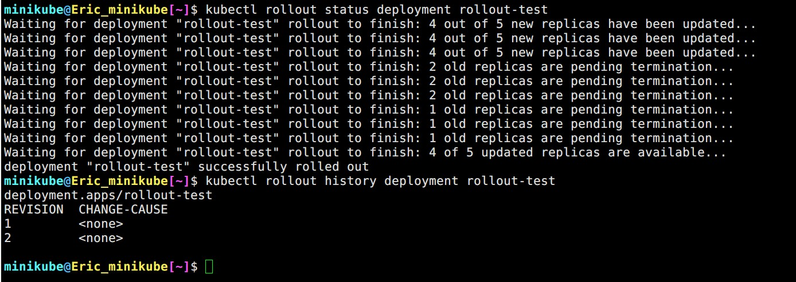
▲ log 由上至下。 kubectl rollout history 可以查看歷史。
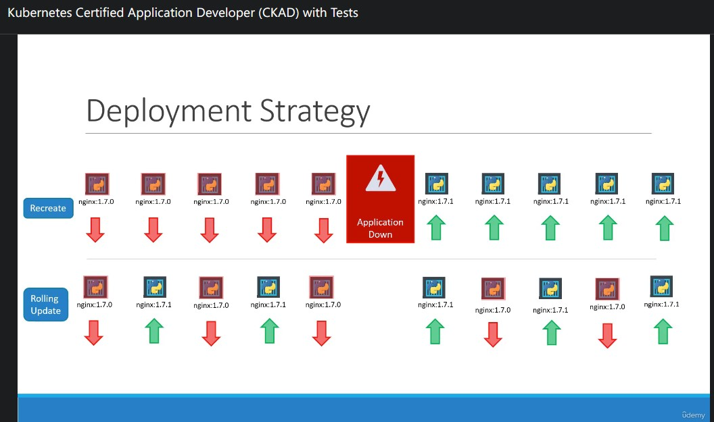
Kubernetes 預設使用 rolling update 策略 (strategy) 來更新 pod，比起 recreate 後者能夠確保服務不被中斷。
kubectl describe deployments.apps rollout-test 能夠找到 RollingUpdateStrategy: 25% max unavailable, 25% max surge
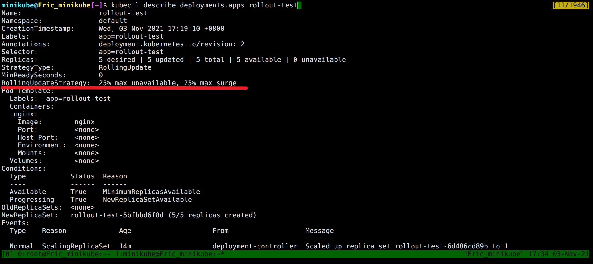
rolling update
首先 kubectl create deployment nginx-rollout --image=nginx:1.20.1 --replicas=5
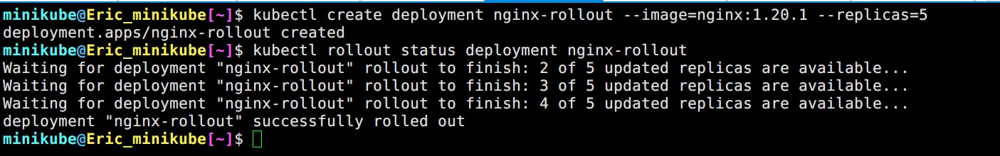
▲ kubectl rollout status 顯示完成
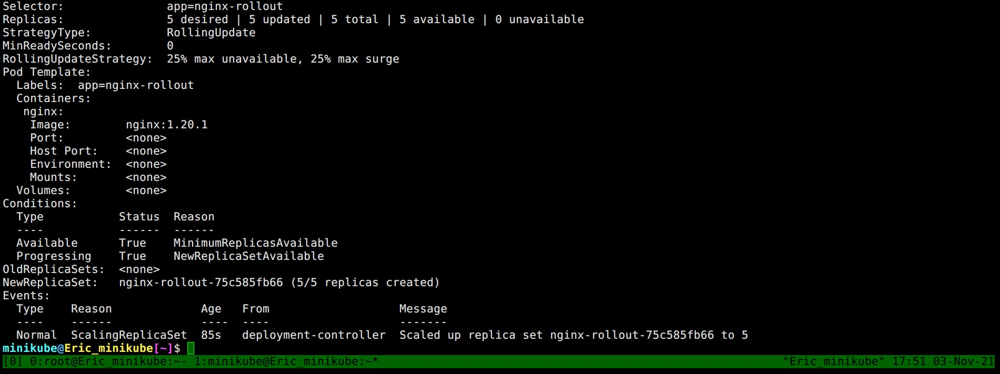
▲ Events 顯示 scale up replica set 75c585fb66 to 5
接著我們升級 nginx -> 1.21
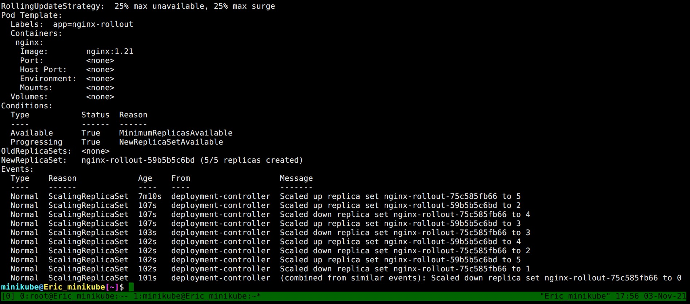
▲ 我們以 藍色代表新的 replica set
scale up replica set 59b5b5c6bd to 2
scale down replica set 75c585fb66 to 4
scale up replica set 59b5b5c6bd to 3
scale down replica set 75c585fb66 to 3
scale up replica set 59b5b5c6bd to 4
scale down replica set 75c585fb66 to 2
scale up replica set 59b5b5c6bd to 5 (達標)
scale down replica set 75c585fb66 to 1
(combined from similar events): Scaled down replica set 75c585fb66 to 0
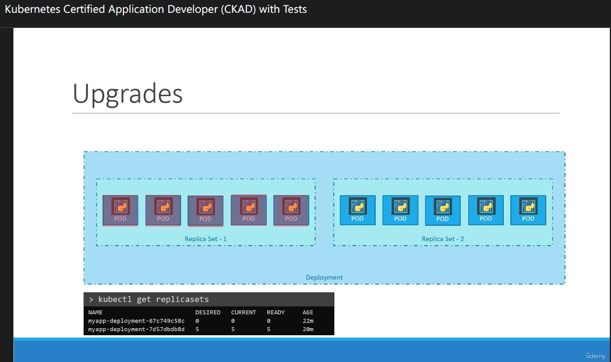
▲ 示意圖
rollback
反悔了，來個 rollback 時光倒轉一下吧! kubectl rollout undo deployment nginx-rollout
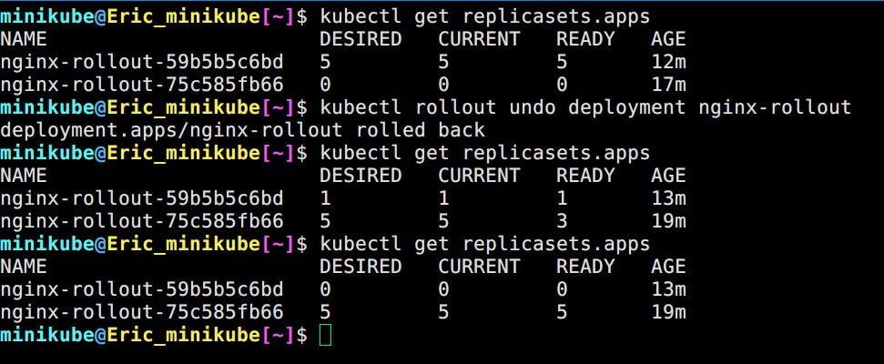
▲ 舊的 replicaset 又有東西囉~
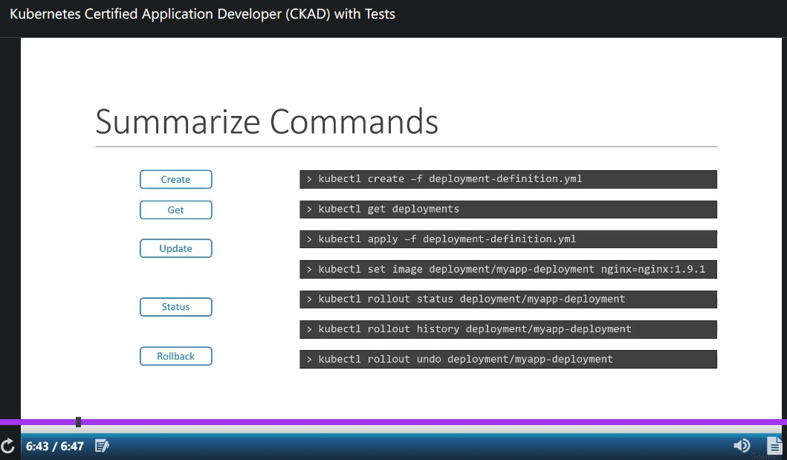
▲ 總結
83. Updating a Deployment
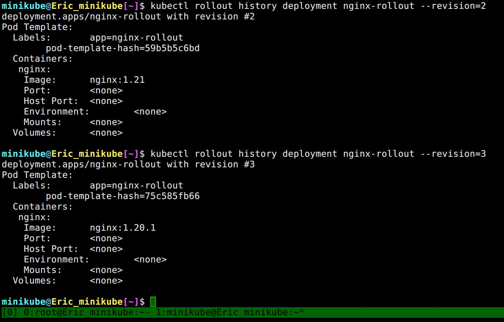
▲ 使用 --revision= 可以查看指定 revision
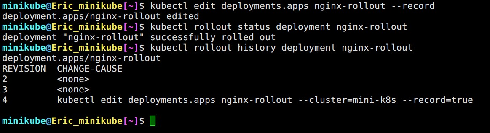
▲ 在 create/edit deployment 的時候使用 --record，可以把當次使用的命令紀錄到 CAUSE 欄位。
86. Jobs
Tips:
|
|
Jobs 就像 Linux 的 at 一樣，負責執行一次性工作 (參考資料: 小信豬 [Kubernetes] Job, CronJob & TTL Controller Overview)
我們直接 hands-on ~ 建立一個 pod 使用 perl 計算圓周率小數點後一位 (???)
|
|
接著用 kubectl get pod pi-pod 觀察 pod 的變化
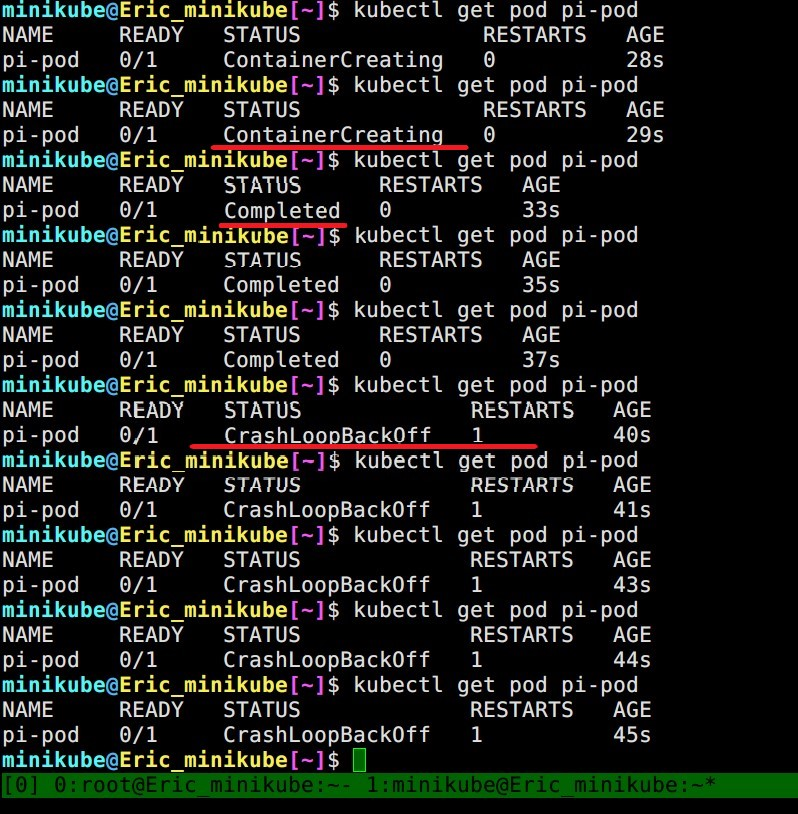
▲ 狀態從 ContainerCreating -> Complete -> CrashLoopBackOff (Restart:1)，好像哪裡怪怪的… 都 Complete 了怎麼會有 restart 呢?
其實這跟 Kubernetes 預設的 restartPolicy 有關。當 K8s 偵測到 pod 裡面的 container failed/exited 就會很熱心地去 restart 人家~
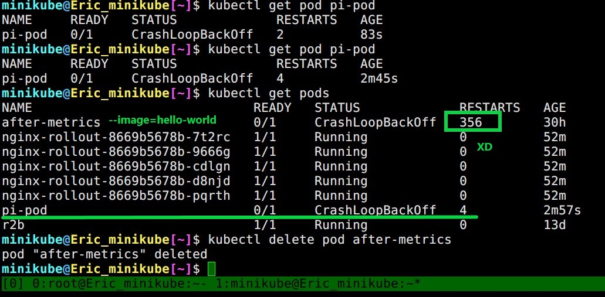
▲ 同場加映，昨天我用 --image=hello-world 建立的 pod 已經 restart 356 次了 XD 因為 hello-world 這個 image 只做一件事情: 顯示 Hello World 後 Exited (0)
然後就被 Kubernetes 一直 restart 惹 QQ
上面的例子讓我們知道一件事: Pod 不適合跑一次性的工作
可是你可能會想說: 那把 restartPolicy: Never 就好了呀~ No no no! Job 能夠幫我們做更多事 :)
我們在來把剛剛的 pod 改成 job:
|
|
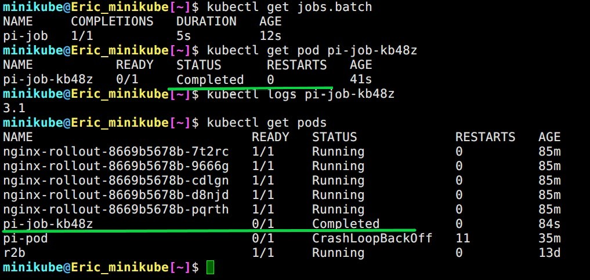
▲ 當 job 執行完成後 STATUS 會變成 Complete 不會被 K8s 一直雞婆 restart。
job 同時可以執行多次、同時執行 (parallelism)
|
|
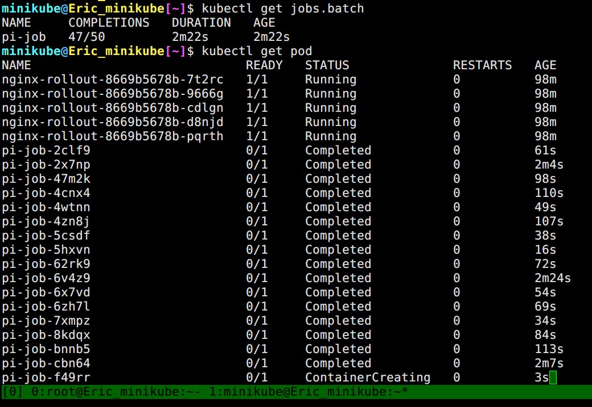
▲ 目標完成: 50，同時執行: 3
backoffLimit
Job 在 .spec.backoffLimit 預設值是 6，這個設定值定義當 pod failed 幾次之後就終止此 Job。
87. CronJob
就跟 Linux 的 cronjob 一樣，定時執行。比較特別的是 CronJob 有三個 spec:
CronJob的Job的Pod的
|
|
Author
LastMod 2022-05-06 (be577e0)